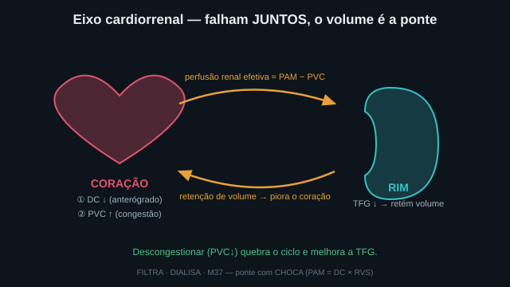
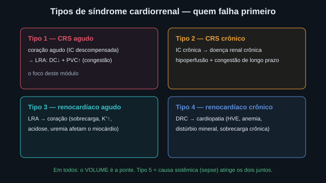
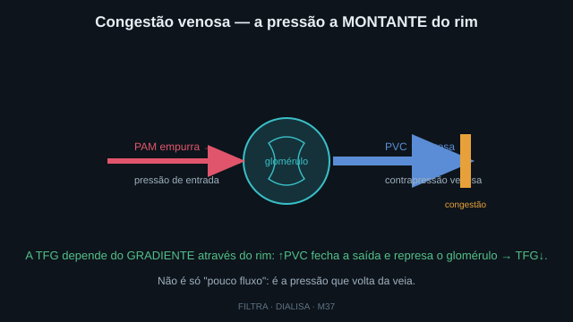
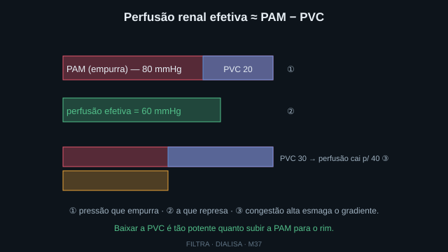
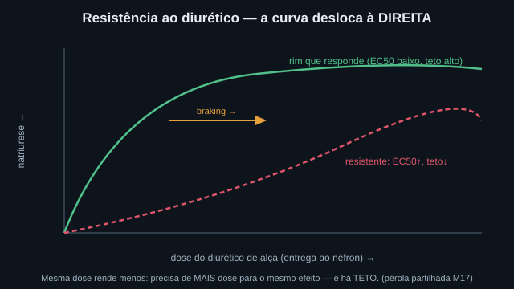
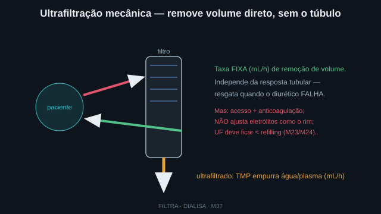
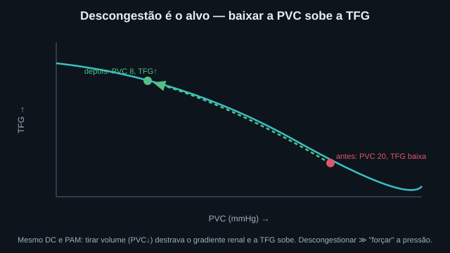
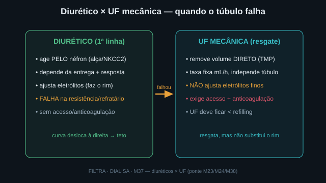

A queda da TFG na síndrome cardiorrenal tem DOIS motores: o débito
cardíaco baixo (anterógrado) e a congestão venosa (PVC alta, a montante). O segundo é o subestimado.
A perfusão renal efetiva é o gradiente através do rim: PAM − PVC. As Fig. 1–8 voltam no Caso,
na Trilha e na Avaliação. Atribuição em CREDITS.md (em curadoria).
Um coração que falha entrega menos sangue para a frente (DC↓) e represa sangue atrás (PVC↑). O rim, mal perfundido, retém sal e água — e essa retenção de volume piora o coração. É um ciclo vicioso fechado pelo volume. Quebrar o ciclo é descongestionar (ponte com o Choca: PAM = DC × RVS; o mesmo volume que o Guyton governa).


A TFG depende do gradiente de pressão através do rim, não só do fluxo de entrada. A PVC alta é como uma barragem na saída venosa: ela represa o glomérulo, fecha a saída e derruba a TFG mesmo com PAM e DC quase normais. "Pouca urina" aqui não é "pouca água que chega" — é a veia que não drena.


A 1ª linha de descongestão é o diurético de alça (bloqueia o NKCC2). Mas a congestão e a baixa perfusão reduzem a entrega da droga ao néfron e a resposta tubular satura: a curva dose-resposta desloca à direita (EC50↑) e o teto cai — é a resistência ao diurético (o braking, pérola partilhada com o M17). Dobrar a dose rende menos no resistente.


Como a perfusão efetiva é PAM − PVC, baixar a PVC sobe a TFG. Esse é o alvo: tirar volume (por diurético ou UF) descongestiona, a PVC cai e a TFG melhora — frequentemente mais que "forçar" a pressão arterial. O diurético é a 1ª linha; a UF mecânica é o resgate quando ele falha (mas não substitui a função renal: não corrige finamente eletrólitos/ácido-base como o rim faria). Caveat (CARRESS-HF): no ensaio de referência, a UF não foi superior à terapia farmacológica escalonada (diurético em degraus) e causou mais eventos renais adversos — por isso a UF é resgate da refratariedade comprovada, não um atalho de primeira linha.


UTI/enfermaria. IC descompensada com LRA. A pergunta de cada ato: o que derruba a TFG, e como descongestionar? Volte às Fig. 1, 3, 5 e 7: o mecanismo decide.
DOIS motores: o DC baixo (perfusão anterógrada) e a congestão venosa (PVC↑, a pressão a montante). A perfusão renal efetiva é o gradiente: PAM − PVC.
Porque a TFG depende do gradiente através do rim, não só do fluxo de entrada. A PVC alta represa o glomérulo (Fig. 3) e derruba a TFG mesmo com PAM/DC quase normais. "Pouca urina" pode ser a veia que não drena.
Descongestionar — baixar a PVC. Como perfusão ≈ PAM − PVC, tirar volume sobe o gradiente e a TFG (Fig. 7). Frequentemente vale mais que "forçar" a PA com vasopressor.
O diurético de alça (bloqueia o NKCC2 no ramo espesso). Dose ancorada ao mecanismo (entrega ao néfron), titulada pelo débito urinário em mL/h. Tira sal e água → baixa a PVC.
A congestão e a baixa perfusão reduzem a entrega da droga ao túbulo e a resposta satura: a curva dose-resposta desloca à direita (EC50↑) e o teto cai (Fig. 5). É o braking — dobrar a dose rende menos.
Na refratariedade: o diurético falhou e a sobrecarga persiste. A UF remove volume a taxa fixa (mL/h), independente do túbulo (Fig. 6/8) — resgata onde a droga não chega.
Não. Ela remove volume (uma função), mas não ajusta finamente eletrólitos/ácido-base como o rim. E exige acesso + anticoagulação. É uma alavanca de volume, não um rim de reposição.
A UF tira água do plasma; o interstício a repõe pelo refilling, com atraso. Se a UF excede o refilling, o volume plasmático cai → hipotensão e stunning miocárdico (M24). Tirar devagar é tolerar.
A descongestão devolve o volume ao normal, destrava o gradiente renal e recupera a TFG — defendendo o meio interno. Coração e rim falharam juntos pelo volume; corrigir o volume é tratar os dois. Ponte com Choca: PAM = DC × RVS.
Os controles do Lab movem o ponto nesta curva. Eixo horizontal = PVC (congestão venosa, 0→24 mmHg); eixo vertical = TFG (filtração). A curva azul é a TFG computada pelo motor: ela cai quando a PVC sobe (a perfusão efetiva ≈ PAM − PVC encolhe). O marcador vermelho é o paciente atual; o marcador verde é a TFG prevista após descongestionar (PVC alvo) — a seta mostra o ganho. Troque para o modo dose-resposta para ver a curva do diurético deslocar com a resistência.
| Saída | Atual | Comentário |
|---|---|---|
| Perfusão renal efetiva (≈ PAM − PVC) | — | o gradiente através do rim |
| TFG (mL/min) | — | cai com a congestão |
| Quem derruba a TFG (congestão × DC) | — | decompor antes de interpretar |
| Resposta diurética (natriurese) | — | EC50 deslocado pela resistência |
| Conduta — diurético × UF mecânica | — | UF quando refratário |
| Descongestão prevista (PVC alvo · ganho TFG) | — | baixar a PVC sobe a TFG |